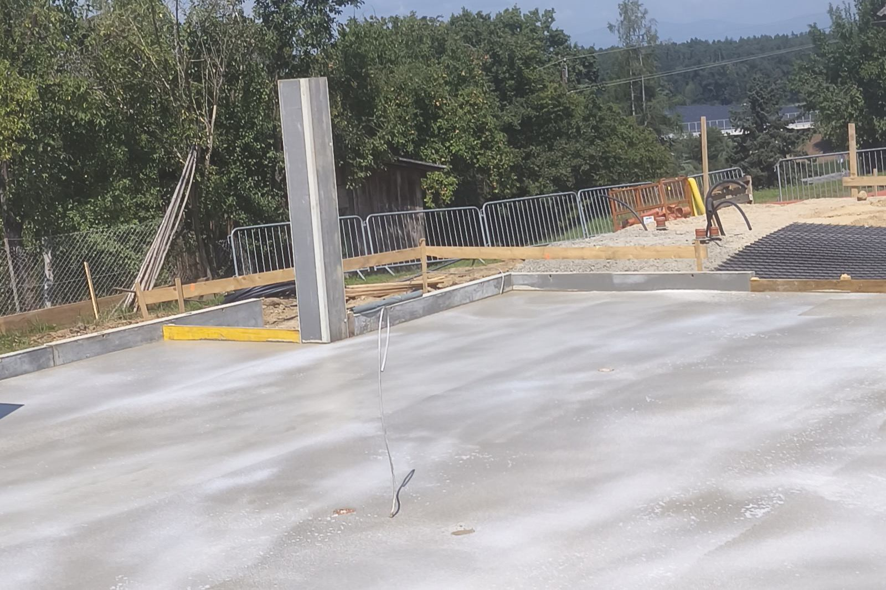
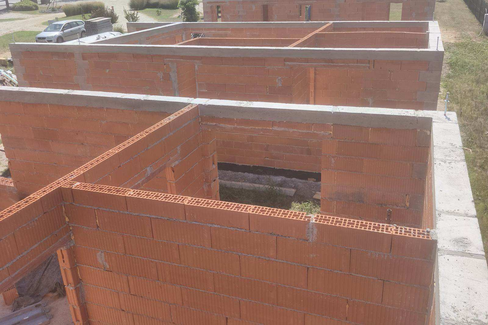
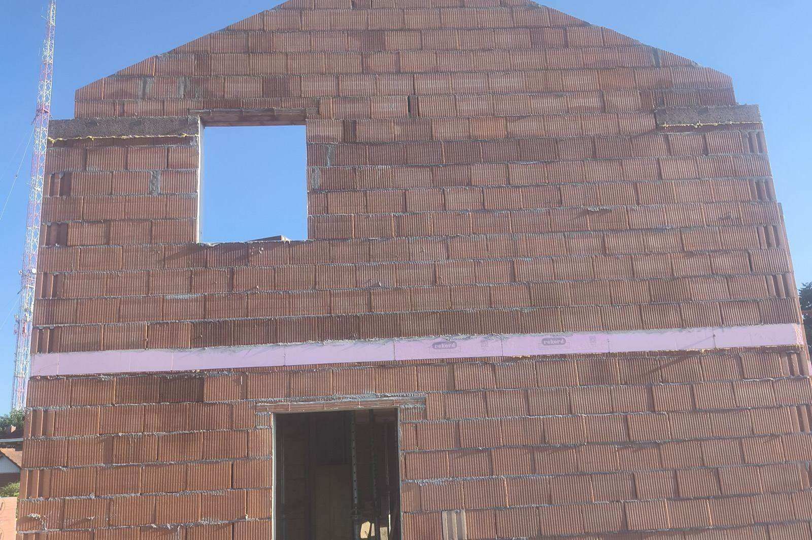

Zemeljska dela in temelji v Mariboru
Izkopi, gradbene jame in ureditev terena – solidna osnova vsakega projekta.

Izkopi in ureditev terena z bagrom
Z lastno mehanizacijo izvedemo izkope za temelje, gradbene jame in izkope za komunalne vode ter uredimo in utrdimo teren. Poskrbimo tudi za odvoz in dovoz materiala. Izkope, temelje in ureditev terena izvajamo na gradbiščih po Mariboru in v Podravju.
- Izkopi za temelje in objekte
- Gradbene jame in široki izkopi
- Planiranje, nasipavanje in utrjevanje terena
- Izkopi za komunalne in kanalizacijske vode
- Rušitve manjših objektov
- Odvoz in dovoz materiala
Izkopi in urejanje terena z mehanizacijo.



Potek zemeljskih del in temeljev v Mariboru
Zemeljska dela in temelje v Mariboru izvedemo kot trdno osnovo za vsak objekt – od izkopa do betoniranja.
- Priprava gradbišča in zakoličba
- Izkop gradbene jame in izkop za temelje
- Planiranje, nasipavanje in utrjevanje terena
- Opaž in armatura temeljne plošče ali pasovnih temeljev
- Betoniranje temeljev in odvoz odvečnega materiala
Koliko stanejo zemeljska dela in temelji v Mariboru?
Cena zemeljskih del je odvisna od kubature izkopa, vrste terena, dostopnosti za gradbeno mehanizacijo ter količine materiala za odvoz. Po ogledu lokacije v Mariboru ali okolici pripravimo oceno del za izkop in temelje.
Povprašajte za ponudboPogosta vprašanja
Ali izvajate izkope in temelje za novogradnjo?
Delate tudi manjše izkope za priključke ali škarpe?
Koliko stanejo zemeljska dela in temelji v Mariboru?
Potrebujete izkop ali ureditev terena?
Pokličite ali pišite in dogovorimo se za ogled ter oceno del.